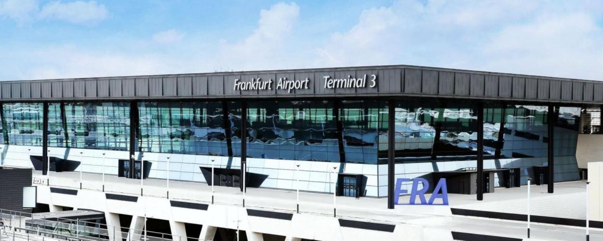
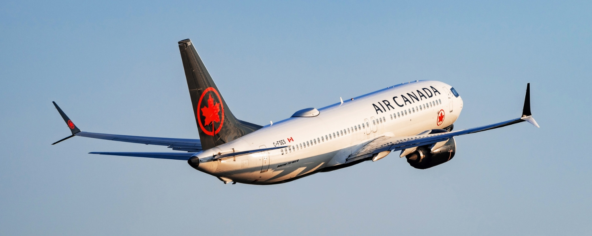
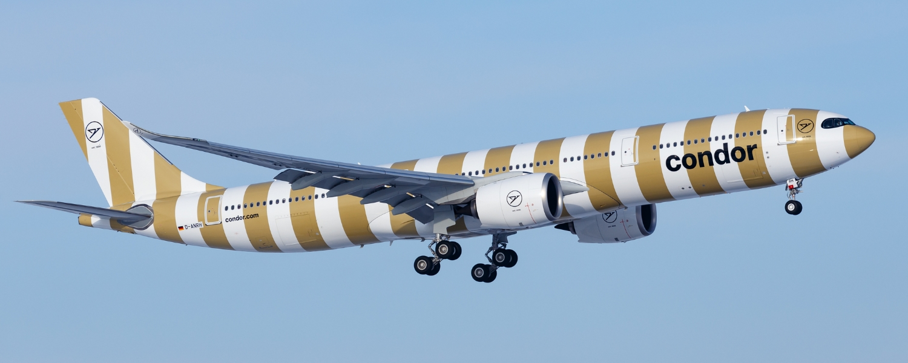
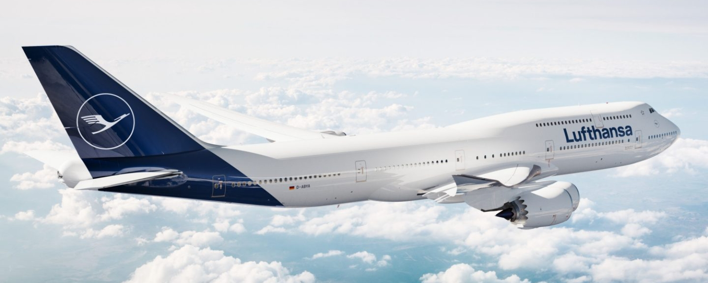
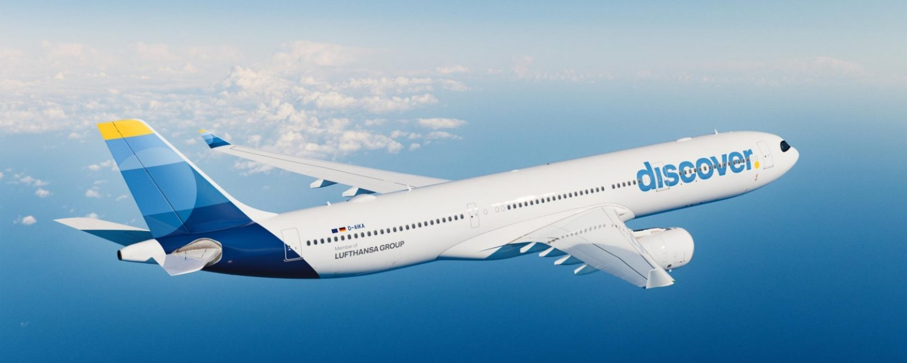

June 24, 2026
General TravelHow to Get to Frankfurt from Canada: Every Route Explained
Frankfurt is one of Europe's most important gateways, and for Canadian travellers it is also one of the easiest major European cities to reach nonstop. Whether you're heading there for business, using it as a launchpad into the rest of Europe, or exploring the city's skyline, museums, and river views, Frankfurt sees a steady stream of Canadian visitors year-round.
As the home of Lufthansa and one of the busiest airports on the continent, Frankfurt is exceptionally well connected. That means plenty of nonstop choices from Canada, a wide range of aircraft and cabins to pick from, and seamless onward connections once you land.
Here is your complete guide to flying from Canada to Frankfurt.
Where You Fly Into

All flights from Canada arrive at Frankfurt Airport (FRA), Germany's busiest aviation hub and the global headquarters for Lufthansa. It sits about 12 kilometres (7.5 miles) southwest of central Frankfurt, right next to the Frankfurter Kreuz interchange where two of Europe's most heavily used motorways, the A3 and A5, meet.
Most convenient way into the city: Train
Frankfurt Airport's Regional Station connects the airport directly with Frankfurt, Offenbach, Hanau, Aschaffenburg, Rüsselsheim, Mainz, and Wiesbaden. The S-Bahn lines S8 and S9, along with regional trains RB58, RE59, RE2, and RE3, provide fast and convenient service across the entire region. The station sits on the underground level of Terminal 1 (Level 0) and is accessible from all terminal areas (A, B, and C) by following the signs for "Train stations S T."
- Travel time to city centre: around 15 minutes by S-Bahn
- Frequency: trains run every 10 to 15 minutes
- Cost: €6.90 one way
Taxis are also available, but with a train that fast and affordable, it's hard to justify the extra cost.
Air Canada Flights to Frankfurt

Source: Air Canada.
Air Canada offers the broadest Canadian network to Frankfurt, with nonstop service from Montreal, Toronto, and seasonal flights from Vancouver. It's also a strong option if you collect Aeroplan points and want to get the most out of your rewards.
Montreal to Frankfurt
Daily, year-round service operated on two aircraft types, the Boeing 787-9 and the Airbus A330-300. Which one you get can vary by date and season, so it's worth checking the aircraft when you book if cabin layout matters to you. Both offer Air Canada's full three-cabin experience with lie-flat business class.
Boeing 787-9 — 298 seats
| Cabin | Seats | Layout |
|---|---|---|
| Business | 30 | 1-2-1 lie-flat |
| Premium Economy | 21 | 2-3-2 |
| Economy | 247 | 3-3-3 |
Airbus A330-300 — 297 seats
| Cabin | Seats | Layout |
|---|---|---|
| Business | 32 | 1-2-1 lie-flat |
| Premium Economy | 24 | 2-3-2 |
| Economy | 241 | 2-4-2 |
Toronto to Frankfurt
Daily service, with Air Canada rotating between three different wide-body aircraft on this route. That variety is good news for AvGeeks and points collectors alike, since each aircraft offers a slightly different cabin layout. The Boeing 777-200LR in particular carries the largest business class cabin of the three, making it a strong target if you're redeeming Aeroplan points for a premium seat.
Boeing 787-8 — 255 seats
| Cabin | Seats | Layout |
|---|---|---|
| Business | 20 | 1-2-1 lie-flat |
| Premium Economy | 21 | 2-3-2 |
| Economy | 214 | 3-3-3 |
Airbus A330-300 — 297 seats
| Cabin | Seats | Layout |
|---|---|---|
| Business | 32 | 1-2-1 lie-flat |
| Premium Economy | 24 | 2-3-2 |
| Economy | 241 | 2-4-2 |
Boeing 777-200LR — 300 seats
| Cabin | Seats | Layout |
|---|---|---|
| Business | 40 | 1-2-1 lie-flat |
| Premium Economy | 24 | 2-4-2 |
| Economy | 236 | 3-4-3 |
Vancouver to Frankfurt (ends October 2026)
Daily seasonal service operated on the Boeing 787-9. This route runs through the busier summer travel window and wraps up in October, so if you're planning a fall or winter trip from the West Coast you'll likely be connecting instead. For summer travellers, though, it's a convenient nonstop link from Vancouver straight into Lufthansa's home hub.
Boeing 787-9 — 298 seats
| Cabin | Seats | Layout |
|---|---|---|
| Business | 30 | 1-2-1 lie-flat |
| Premium Economy | 21 | 2-3-2 |
| Economy | 247 | 3-3-3 |
Booking with Aeroplan: You can also book Air Canada flights to Frankfurt using Aeroplan points. Air Canada uses dynamic pricing for its own flights, which means the number of points required can fluctuate based on demand, route, and how far in advance you book. It pays to check fares across a few dates to find the sweet spot.
Condor Flights to Frankfurt

Source: Condor.
Condor serves Frankfurt nonstop from Calgary, Toronto, and Vancouver, all on its modern Airbus A330-900neo. The aircraft is the same across every Canadian route, featuring a 1-2-1 lie-flat business class along with a roomy premium economy cabin.
Airbus A330-900neo — 310 seats
| Cabin | Seats | Layout |
|---|---|---|
| Business | 30 | 1-2-1 lie-flat |
| Premium Economy | 64 | 2-4-2 |
| Economy | 216 | 2-4-2 |
Calgary to Frankfurt (ends September 2026)
4x weekly, operating on Mondays, Thursdays, Saturdays, and Sundays. As a seasonal summer route, this is a great option for Albertans heading to Europe during the warmer months, with the added bonus of Condor's modern lie-flat business class up front. Just keep the September end date in mind when planning a return.
Toronto to Frankfurt
Year-round service with a seasonal schedule: daily until October 2026, then 3x weekly in November and December 2026, dropping to 2x weekly in January and February 2027, before returning to 3x weekly in March and April 2027. Because the frequency tightens over the winter, it's worth booking ahead if you're travelling in the slower months, when seats fill faster. Toronto travellers get the same modern A330-900neo year-round, so the onboard experience stays consistent regardless of when you fly.
Vancouver to Frankfurt (ends October 2026)
Daily seasonal service. The daily frequency makes this one of the more flexible Condor routes while it operates, giving West Coast travellers an easy nonstop into Frankfurt right up until the route winds down in October.
Lufthansa Flights to Frankfurt

Source: Lufthansa.
As Germany's flag carrier and the airline that calls Frankfurt home, Lufthansa offers nonstop service from Montreal, Toronto, and Vancouver, with some of the most distinctive aircraft flying to Canada, including its iconic double-decker Boeing 747-400.
Montreal to Frankfurt (ends October 2026)
6x weekly, with no flights on Sundays, operated on the Boeing 787-9. The Dreamliner is one of the most comfortable aircraft flying the Atlantic, with larger windows, lower cabin pressure, and improved humidity that all help cut down on jet lag. With service ending in October, this is primarily a spring and summer option for Montreal travellers.
Boeing 787-9 — 294 seats
| Cabin | Seats | Layout |
|---|---|---|
| Business | 26 | 1-2-1 lie-flat |
| Premium Economy | 21 | 2-3-2 |
| Economy | 247 | 3-3-3 |
Toronto to Frankfurt
Daily, year-round service operated on two aircraft types, including the increasingly rare double-decker Boeing 747-400. For aviation enthusiasts, this is one of the few remaining chances to fly the "Queen of the Skies" on a regularly scheduled transatlantic route from Canada, with the upper deck offering a quieter, more intimate business class cabin. The alternative aircraft, the four-engine Airbus A340-300, is also becoming a rarer sight as airlines retire older widebodies.
Boeing 747-400 (double-decker) — 371 seats
| Cabin | Seats | Layout |
|---|---|---|
| Business (upper deck) | — | 2-2 lie-flat |
| Business (lower deck) | 67 total | 2-2 & 2-3-2 lie-flat |
| Premium Economy | 32 | 2-4-2 |
| Economy | 272 | 3-4-3 |
Airbus A340-300 — 279 seats
| Cabin | Seats | Layout |
|---|---|---|
| Business | 30 | 2-2-2 lie-flat |
| Premium Economy | 28 | 2-3-2 |
| Economy | 221 | 2-4-2 |
Vancouver to Frankfurt
Daily, year-round service operated on the Boeing 787-9. Unlike the seasonal Montreal route, this one runs every day of the year, making it a dependable nonstop link from the West Coast into Lufthansa's main hub no matter the season. The Dreamliner's cabin comfort and quieter ride are a welcome bonus on the long haul across the Atlantic.
Boeing 787-9 — 294 seats
| Cabin | Seats | Layout |
|---|---|---|
| Business | 26 | 1-2-1 lie-flat |
| Premium Economy | 21 | 2-3-2 |
| Economy | 247 | 3-3-3 |
Booking with Aeroplan: Because Lufthansa is a Star Alliance partner, you can use Aeroplan points to book its flights too. Unlike Air Canada's own dynamic pricing, partner redemptions like these are static, so as long as award availability exists, the points cost stays fixed. As an example, Toronto to Frankfurt typically runs around 32,500 Aeroplan points one-way in economy, or 60,000 points one-way for a lie-flat business class seat, which can be excellent value on a transatlantic route.
Discover Airlines Flights to Frankfurt

Source: Discover Airlines.
Discover Airlines, a Lufthansa subsidiary, rounds out the options with nonstop service from Halifax and Calgary, both on the Airbus A330-300. For Atlantic Canadians especially, the Halifax route is a welcome alternative to connecting through a larger hub.
Airbus A330-300 — 283 seats
| Cabin | Seats | Layout |
|---|---|---|
| Business | 30 | 2-2-2 lie-flat |
| Premium Economy | 28 | 2-3-2 |
| Economy | 225 | 2-4-2 |
Halifax to Frankfurt (ends November 2026)
6x weekly. This is a real win for Atlantic Canadians, who would otherwise need to backtrack through Toronto or Montreal to reach Europe. With six flights a week through to November, it gives Halifax travellers a rare nonstop transatlantic option right from their home airport, and the wide-body A330-300 means a full three-cabin experience including lie-flat business class.
Calgary to Frankfurt
Daily, year-round service. The everyday frequency makes this the most flexible of Discover's Canadian routes, giving Calgary travellers a reliable nonstop into Frankfurt at any time of year. Paired with the connecting power of Lufthansa's hub on the other end, it's an easy gateway to destinations right across Europe.
Tips for Finding Cheap Flights to Frankfurt
Fares between Canada and Frankfurt can swing quite a bit depending on the season and how far ahead you book. A few strategies to help you land a better deal:
- Book early, especially for summer — the June to August window is peak season and fares climb quickly
- Consider flying from a nearby city if you have access to more than one airport
- Watch for seasonal route changes — several Frankfurt routes are seasonal, so schedules and fares shift through the year
- Look at shoulder season — May and September tend to offer strong value with thinner crowds
- Use loyalty points strategically — Aeroplan (Air Canada) and Miles & More (Lufthansa) can both deliver excellent value on transatlantic routes, particularly in business class
The Bottom Line
Frankfurt is one of the most accessible European destinations from Canada, with nonstop options from Montreal, Toronto, Vancouver, Calgary, and Halifax across four different airlines.
Whether you're chasing a lie-flat business class seat, hoping to fly the iconic Lufthansa 747, or simply looking for the most direct way across the Atlantic, there's a Frankfurt route to suit you, and plenty of aircraft variety to keep things interesting.
If Frankfurt is on your travel list, now is the time to start tracking fares and locking in your trip.
Happy travels!